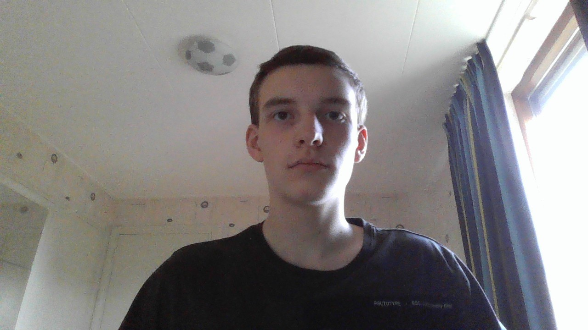

Goededag, mijn naam is Merijn Dreef. In deze portfolio ga ik wat vertellen over mijzelf.
Mijn naam is Merijn Dreef, ik ben 17 jaar oud en ik ben nu bezig met de studie van applicatie en media ontwikkelaar op het Da vinci in Dordrecht. Ik koos voor applicatie en media ontwikkelaar, omdat ik de andere opledingen waaronder Retail niet echt leuk vond, doordat applicatie en media ontwikkelaar mijn aandacht trok door open dagen bij het Da vinci college op het Leerpark in Dordrecht, waar ik Robotarm zat te doen met de docenten: Jan-Willem op mijn eerste opendag op het Da vinci college en Assis op mijn tweede opendag.
Maar iedereen heeft motivatie, wat is mijn motivatie om door te blijven gaan? Dat ga ik u nu vertellen.
Mijn motivatie om door te gaan is: Bij elk foutje dat je maak leer je iets nieuws om te verbeteren. Sinds het de eerste paar weken zijn kan ik beter die fouten onthouden en gebruiken om mijzelf te verbeteren. Ik heb ook motivatie gekregen doordat ik goede vrienden heb gemaakt met klasgenoten en elke keer dat ik ze zie heb ik extra motivatie om door te werken, waardoor ik mijn werk gezelliger kan afmaken, maar ook bereid om verder te gaan met deze opleiding door dat ik vrienden heb die mij steunen.